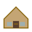

Farm scraps → real banana fiber (machine tour)
Processly · YouTube
You type, the belt moves. Kitchen scraps turn into actual fabric stuff — same energy as the restaurant game, except you’re building clothes.

Treat the lab like a pass: whatever station is glowing is your spot. Type the action word, your tiny worker scoots along the bench, then the finished piece flies to the neighborhood side.
Quick YouTube rabbit holes — plants → fiber, robots sorting thrift piles, and a news clip on banana waste → cloth.
Farm scraps → real banana fiber (machine tour)
Processly · YouTube
Robots chewing through a mountain of old clothes
TOMRA · YouTube
Taiwan: banana leftovers → cloth (news)
Al Jazeera English · YouTube
Scraps level up into clothes — one station at a time.
—
Something a person can actually wear.
Same links as the title screen — open in a new tab if you’re mid-run.
On deck
—
For —

Done pile
Fresh off the line
Space for next line